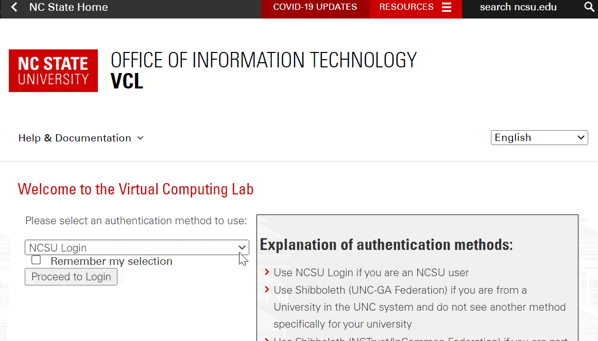
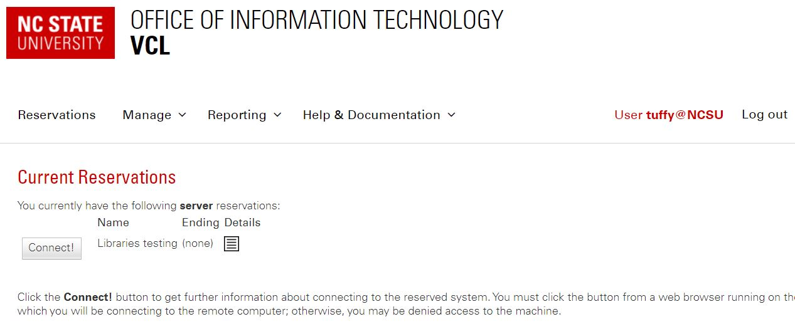
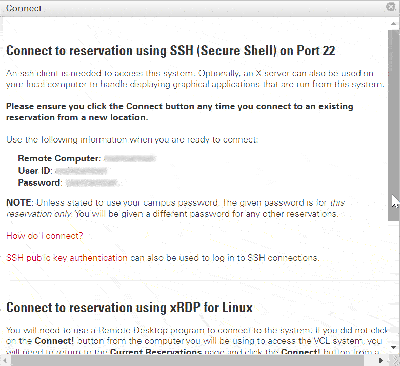

2. Authenticating
Sign into the website
Once we have notified you about having access, go to https://vcl.ncsu.edu/, and click on “Log in” near the top right.
If you have a NC State Unity ID, enter your username and password. Then skip to obtaining your virtual reading room credentials.
If you’re using a non-NCSU Account, under “Please select an authentication method to use,” click on the drop-down list. Scroll down, select Non-NCSU Account, and click “Proceed to Login.”

Then enter your email address and password.
Obtain your virtual reading room credentials
Click on Reservations near the top left of the page.
Under Current Reservations, click the “Connect!” button, and a window will pop up.

Scroll down to “Connect to reservation using xRDP for Linux.”

Write down the Remote Computer number, User ID, and Password. You’ll use this info (but won’t be able to copy and paste it) when connecting in the next steps.
Do not click on the button “Get RDP File.”